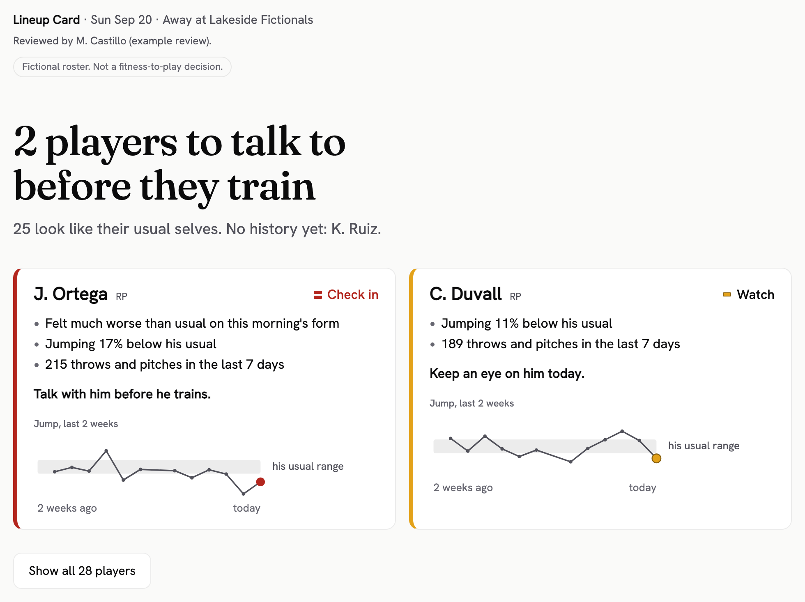

Lineup Card: how to use it
One file that opens in your web browser. No install, no account, no internet needed. Checked in Google Chrome; Microsoft Edge not checked yet.
What you get
A one-page morning brief for staff. The headline says how many players to talk to before they train.
Each of those players gets a box: the reasons in plain words, what to do, and his jump over the last 2 weeks. Everyone else is behind one button. The whole roster prints on the same page.
Each player is compared with his own last 4 weeks, not with the team. A flag is a reason to talk, not a decision to sit him. Coaches and medical staff decide who plays.
- Check inTalk with him before he trains.
- WatchKeep an eye on him today.
- No changeWithin his usual ups and downs.
- Not enough dataNo fresh reading or no history yet.

How to make one
1 Open the file and see the sample
Double-click lineup-card.html. It opens in your web browser. Click "See a sample card" to see a finished card. On it, "See how it was checked" opens the review behind it.

2 Type club and name, then add the files
Drop the VALD, Catapult and wellness exports and roster.csv on the box, or click "Choose a folder" to load them all at once. Each file found is listed. Click "Build today's review".

3 Mark today's players
Paste the lineup and probable pitchers, one per line. Names, last names or IDs work. Click "Use this list".

4 Decide each flag and approve
Under "Flags to decide", click Confirm, or pick a new status and click Change, or click Remove flag. Change and Remove need a note. Then click "Approve and build the Lineup Card".

5 Save the PDF and send it
Click "Save PDF", then choose Save as PDF. You get one Letter page named "Lineup Card", the club and the date, ready for Slack, Teams or email. "Copy for group text" copies a short text version.

What it needs
- VALD ForceDecks jump (CMJ), Catapult OpenField and morning wellness exports, saved as CSV.
- roster.csv (
lc_id, name, pos, vald_external_id, catapult_name) links each player across the files. Anyone not in it is held out and listed, never guessed. - Column names like the files in sample-data. In Excel, save as "CSV UTF-8".
- The last 4 weeks or more of daily exports. A player needs 10 readings in the 28 days before a day, and one from the last 4 days. Until then he shows Not enough data.
- Catapult times are read as US Central time. Optional: schedule.csv (
date, opponent, home_away, note).
Where your data goes
Dropped files stay in browser memory and are gone when you close the tab. Saved reviews stay in this browser, under the club name. "Forget saved reviews on this computer" deletes them.
For analysts: the numbers behind each flag are on the review screen, under "For analysts: how noisy each test is". The card uses plain words only.